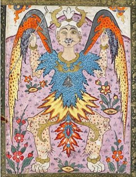

بِسْمِ اللهِ الرَّحْمَٰنِ الرَّحِيمِ
A Book of Wonders
Al-Dābba - The Beast of the Earth
الدَّابَّةُ مِنَ الْأَرْضِ

Physical Description
Al-Dābba is a real beast , described as a combination of different beasts and animals, who will speak to the people. The Dabbah is said to carry the Seal of Solomon and the Staff of Moses. It will emerge from the earth from one of the following places: either from Mount Ṣafā, from beneath the Kaʿba, or from the desert. There is no confirmed location of its emergence. (ʿArīfī, The End of the World, pp. 407, 409.)
Lore & Significance
Al-Dābba is the eighth major sign of the Day of Judgement, appearing after the sun rises from the west. It is an apocalyptic creature that emerges to speak to mankind and to brand the faces of the believers and the disbelievers. (ʿArīfī, The End of the World, p. 409.)
The Qurʾānic foundation for this creature is found in Sūrat al-Naml (27:82): "And when the Word is fulfilled against them, We shall bring forth for them a Beast from the Earth that will speak to them — for mankind did not have certainty in Our signs." Al-Dābba's emergence is thus linked directly to the failure of humanity to heed the signs of God while the time for repentance remained open. Once the sun rises from the west, repentance will no longer be possible. The primary role of the Dabbah is not to destroy the people, but to mark them. By showing them what was always true, the Dabbah becomes a mirror, showing each soul what that is truly inside of them.